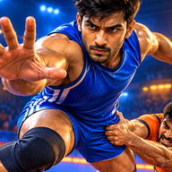

Kabaddi Raid PrivacySomething not working, or an idea for the game? Tell us through our contact page, with your phone's model and what happened. A screenshot helps.
Move with the stick on the left of the screen (put your thumb down anywhere there). Cross the baulk line, touch a defender with Hand touch or Kick, then get back over the midline before your breath (or the raid clock) runs out. Dodge, Dubki and Lion jump get you out of a tackle; if you are caught, Break free lights up. How to Play, on the home screen, goes through every move and rule.
You control one defender (tap another player to switch). Hold the raider with Ankle, Thigh or Waist, or Dash him out of the court. Chain links you with a team-mate for a chain tackle.
Tap the language button on the home screen. The game speaks English, Hindi, Marathi, Tamil, Telugu, Kannada, Bengali and Punjabi, and starts in your phone's language if it is one of them.
Open Settings and set Graphics to Medium or Low. The game also lowers it by itself if your phone cannot keep up, and says so on screen.
No. Updates keep your settings and saved games. Uninstalling the game deletes them, because they are kept only on your phone (see the privacy policy).
Tap the version number on the home screen seven times to turn on the developer's overlay. Play until the problem happens, tap Copy summary and paste it into your message. Seven more taps turn it off.
Not yet. The browser version, at kabaddi-raid-beta.netlify.app, plays on an iPhone, iPad or computer: turn a phone sideways, and tap once to start the sound.
Through our contact page: thekabaddipulse.com/contact.